01
Sabbiatrici a grappolo
Acquistate nel 2012, marca OMSG. Sabbiatura a sfere d’inox, granulometria 50.
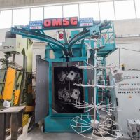
Lavorazioni
Dal 2011 TEMPRALL integra servizi di finitura superficiale per componenti in leghe leggere, con reparto dedicato e macchinari specifici.
Reparto
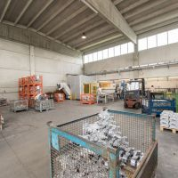

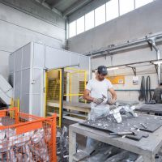
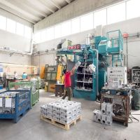
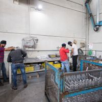
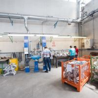
Servizio
Il reparto gestisce lavorazioni di finitura superficiale per pezzi piccoli e grandi, valutando ogni commessa in base alle condizioni del materiale e alle richieste del cliente.
Per queste lavorazioni sono impiegate 15 persone, suddivise su 3 turni, 5 giorni a settimana.
Macchinari
Acquistate nel 2012, marca OMSG. Sabbiatura a sfere d’inox, granulometria 50.

Acquistata nel 2012, marca Tosca. Sabbiatura a sfere d’inox, granulometria 50.
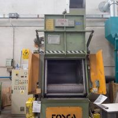
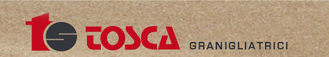
Due nastri acquistati nel 2012, marca Arcos, dedicati alle lavorazioni di smerigliatura.
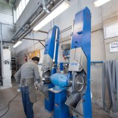
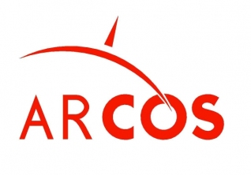
Acquistato nel 2013 dopo un bando INAIL, marca TREBI. Robot con visura ottica, lama di taglio e tavola predisposta per diversi attrezzi.
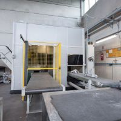
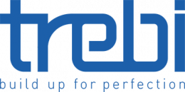
Valutazione tecnica
Temprall valuta pezzi, condizioni e volumi produttivi, prevedendo ulteriori investimenti quando necessari.